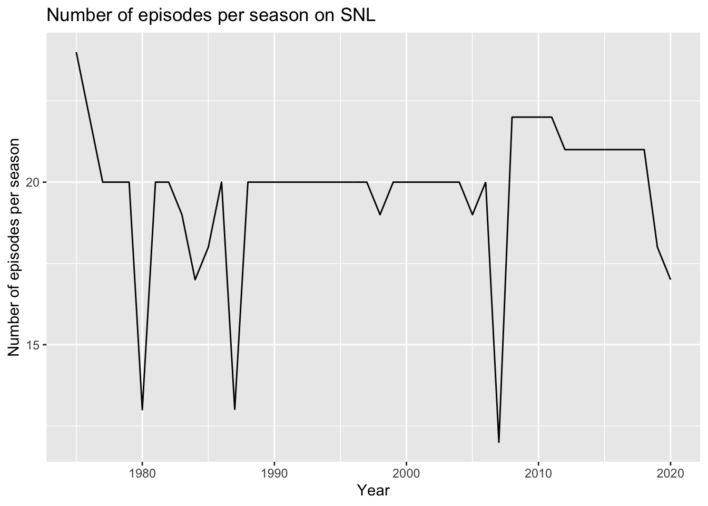
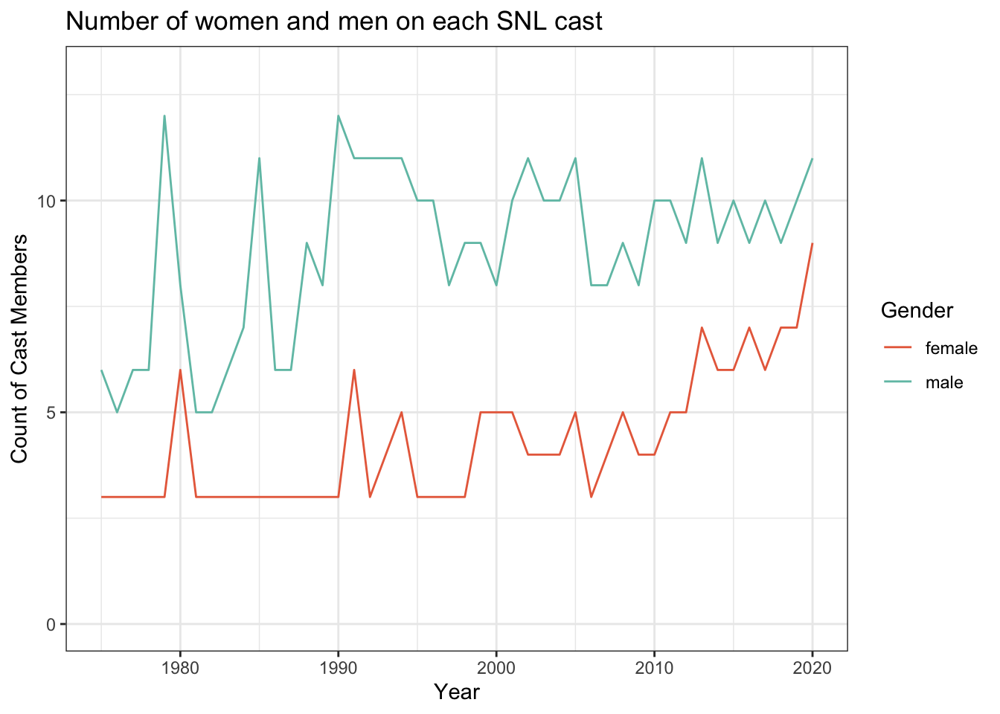
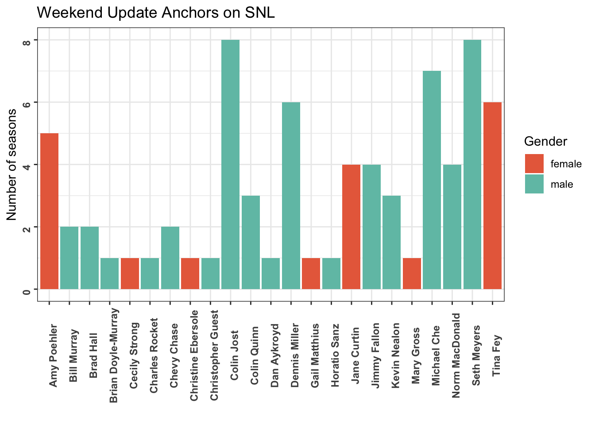

library(tidyverse)
library(ggplot2)
library(lubridate)
knitr::opts_chunk$set(echo = TRUE, warning=FALSE, message=FALSE)Challenge 8: SNL
challenge_8
snl
Justine Shakespeare
Joining Data
Load and tidy the data
We’ll use the SNL data for today’s challenge. First we’ll load each of the three csv files, casts, actors, and seasons.
# Load the datasets
casts <- read_csv("_data/snl_casts.csv", skip = 1, col_names = c("aid", "sid", "featured", "cast_first_epid", "cast_last_epid", "update_anchor", "cast_n_epid", "season_fraction"))
actors <- read_csv("_data/snl_actors.csv")
seasons <- read_csv("_data/snl_seasons.csv", skip = 1, col_names = c("sid", "year", "seasons_first_epid", "seasons_last_epid", "seasons_n_epid"))Let’s take a closer look at the actors dataset and prepare it for joining.
glimpse(actors)Rows: 2,306
Columns: 4
$ aid <chr> "Kate McKinnon", "Alex Moffat", "Ego Nwodim", "Chris Redd", "Ke…
$ url <chr> "/Cast/?KaMc", "/Cast/?AlMo", "/Cast/?EgNw", "/Cast/?ChRe", "/C…
$ type <chr> "cast", "cast", "cast", "cast", "cast", "guest", "guest", "cast…
$ gender <chr> "female", "male", "unknown", "male", "male", "andy", "male", "f…This contains information about cast members and guests on SNL including the persons gender, whether they are a cast member or guest, and a URL. For the purpose of this analysis, we only need the variables aid and gender. We can use the type variable to filter for only cast members.
cast_only <- actors %>%
filter(type == "cast") %>%
select(aid, gender)
glimpse(cast_only)Rows: 154
Columns: 2
$ aid <chr> "Kate McKinnon", "Alex Moffat", "Ego Nwodim", "Chris Redd", "Ke…
$ gender <chr> "female", "male", "unknown", "male", "male", "female", "male", …Let’s take a closer look at the gender values to ensure that we don’t have any missing values.
table(cast_only$gender)
female male unknown
52 100 2 cast_only %>%
filter(gender == "unknown")# A tibble: 2 × 2
aid gender
<chr> <chr>
1 Ego Nwodim unknown
2 Punkie Johnson unknownIt looks like there are two cast members with “unknown” gender. I googled the two names to confirm their pronouns and gender. Now we can recode those values in the data.
cast_only$gender <- ifelse(cast_only$aid == "Ego Nwodim", replace(cast_only$gender, cast_only$gender == "unknown", "female"), cast_only$gender)
cast_only$gender <- ifelse(cast_only$aid == "Punkie Johnson", replace(cast_only$gender, cast_only$gender == "unknown", "female"), cast_only$gender)Since we want to keep all of the variables in the casts data, we can join that data to the casts_only dataset we’ve just created without removing any variables.
# Join the datasets using left_join()
cast_actors <- left_join(cast_only, casts, by = "aid")
glimpse(cast_actors)Rows: 607
Columns: 9
$ aid <chr> "Kate McKinnon", "Kate McKinnon", "Kate McKinnon", "Ka…
$ gender <chr> "female", "female", "female", "female", "female", "fem…
$ sid <dbl> 37, 38, 39, 40, 41, 42, 43, 44, 45, 46, 42, 43, 44, 45…
$ featured <lgl> TRUE, TRUE, FALSE, FALSE, FALSE, FALSE, FALSE, FALSE, …
$ cast_first_epid <dbl> 20120407, NA, NA, NA, NA, NA, NA, NA, NA, NA, NA, NA, …
$ cast_last_epid <dbl> NA, NA, NA, NA, NA, NA, NA, NA, NA, NA, NA, NA, NA, NA…
$ update_anchor <lgl> FALSE, FALSE, FALSE, FALSE, FALSE, FALSE, FALSE, FALSE…
$ cast_n_epid <dbl> 5, 21, 21, 21, 21, 21, 21, 21, 18, 17, 21, 21, 21, 18,…
$ season_fraction <dbl> 0.2272727, 1.0000000, 1.0000000, 1.0000000, 1.0000000,…We’ll join this with the seasons data and then continue cleaning the data.
sca <- left_join(cast_actors, seasons, by = "sid")There are several date variables that are currently stores as numeric, we will changes those to dates.
# clean up date data
sca$cast_first_epid <- ymd(sca$cast_first_epid)
sca$cast_last_epid <- ymd(sca$cast_last_epid)
sca$seasons_first_epid <- ymd(sca$seasons_first_epid)
sca$seasons_last_epid <- ymd(sca$seasons_last_epid)
glimpse(sca)Rows: 607
Columns: 13
$ aid <chr> "Kate McKinnon", "Kate McKinnon", "Kate McKinnon", …
$ gender <chr> "female", "female", "female", "female", "female", "…
$ sid <dbl> 37, 38, 39, 40, 41, 42, 43, 44, 45, 46, 42, 43, 44,…
$ featured <lgl> TRUE, TRUE, FALSE, FALSE, FALSE, FALSE, FALSE, FALS…
$ cast_first_epid <date> 2012-04-07, NA, NA, NA, NA, NA, NA, NA, NA, NA, NA…
$ cast_last_epid <date> NA, NA, NA, NA, NA, NA, NA, NA, NA, NA, NA, NA, NA…
$ update_anchor <lgl> FALSE, FALSE, FALSE, FALSE, FALSE, FALSE, FALSE, FA…
$ cast_n_epid <dbl> 5, 21, 21, 21, 21, 21, 21, 21, 18, 17, 21, 21, 21, …
$ season_fraction <dbl> 0.2272727, 1.0000000, 1.0000000, 1.0000000, 1.00000…
$ year <dbl> 2011, 2012, 2013, 2014, 2015, 2016, 2017, 2018, 201…
$ seasons_first_epid <date> 2011-09-24, 2012-09-15, 2013-09-28, 2014-09-27, 20…
$ seasons_last_epid <date> 2012-05-19, 2013-05-18, 2014-05-17, 2015-05-16, 20…
$ seasons_n_epid <dbl> 22, 21, 21, 21, 21, 21, 21, 21, 18, 17, 21, 21, 21,…Briefly describe the data
This data provides information on the casts of SNL from 1975 to 2020. Each row of this newly created dataframe represents a unique actor-season combination with information on the actor and the SNL seasons they have been on. Each row contains information about the actor’s gender, whether they were featured in a particular season, the date of their first episode, the date of their last episode, the number of episodes they have been in, the fraction of each season they’ve been in, a URL for that actor, whether they were a member of the cast or a guest on the show, and whether they were an anchor on weekend update. Each row also contains information about the seasons they have been on, including the year of that season, the dates of the first and last episode of that seasonl, and the total number of episodes in that season.
Data exploration
Now let’s explore the data a little. First we’ll take a look at some summary statistics related to seasons, including the range of years covered in this data…
# range of seasons
range(sca$year, na.rm = TRUE)[1] 1975 2020…a time series graph that shows the number of episodes per season…
# year with the most episodes in a season
sca %>%
group_by(year, seasons_n_epid) %>%
ggplot(aes(x = year, y = seasons_n_epid)) + geom_line() +
labs(title = "Number of episodes per season on SNL",
x = "Year", y = "Number of episodes per season")
And the minimum, maximum, and median length of seasons.
# min, median, and max length of seasons
sca %>%
summarize(min = min(seasons_n_epid, na.rm = TRUE), median = median(seasons_n_epid, na.rm = TRUE), max = max(seasons_n_epid, na.rm = TRUE))# A tibble: 1 × 3
min median max
<dbl> <dbl> <dbl>
1 12 20 24The following visualization is a time series graph that shows the number of women and men on each SNL cast. It shows that there have always been more men than women on each season but in recent years it has come closer to reaching parity.
season_gender <- sca %>%
group_by(sid, year) %>%
count(gender)
season_gender %>%
ggplot(aes(x=year, y=n, group=gender, color=gender)) +
geom_line() +
scale_color_manual(values = c("#E86C4A", "#70C1B3")) +
labs(title = "Number of women and men on each SNL cast",
x = "Year", y = "Count of Cast Members", color = "Gender") +
theme_bw() + ylim(0,13)
The following table shows which cast members worked the most seasons.
sca %>%
group_by(aid) %>%
count() %>%
arrange(desc(n))# A tibble: 154 × 2
# Groups: aid [154]
aid n
<chr> <int>
1 Kenan Thompson 18
2 Darrell Hammond 14
3 Seth Meyers 13
4 Al Franken 11
5 Fred Armisen 11
6 Kate McKinnon 10
7 Tim Meadows 10
8 Aidy Bryant 9
9 Bobby Moynihan 9
10 Cecily Strong 9
# … with 144 more rowsThis graph shows the cast members who have anchored the Weekend Update on SNL, how many season they have anchored, and the gender of each cast member. Seth Meyers and Colin Jost have hosted the Weekend Update the most seasons.
sca %>%
filter(update_anchor == "TRUE") %>%
group_by(aid, gender) %>%
count() %>%
ggplot(aes(x = aid, y = n, fill = gender)) + geom_col() +
scale_fill_manual(values = c("#E86C4A", "#70C1B3")) +
theme_bw() +
theme(axis.text.x = element_text(face = "bold", angle = 90),
axis.text.y = element_text(face = "bold", angle = 90)) +
labs(title = "Weekend Update Anchors on SNL",
x = " ", y = "Number of seasons", fill = "Gender")